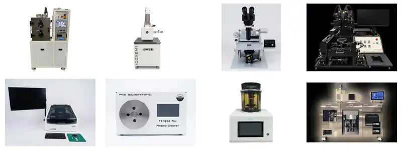

Facilities
Experimental tools for quantum-device research.
QDL combines in-lab equipment for low-temperature experiments and device characterization with shared fabrication and analysis facilities.
QDL Equipment
In-lab equipment
Core equipment used directly within the Quantum Device Lab for low-temperature measurements, device handling, electrical characterization, bonding, microscopy, and rapid prototyping.

01Dry Dilution Refrigerator
024K Cryocooler
032D Transfer Station
04Probe Station
05Wedge Wire Bonder
06Scanning Electron Microscope (SEM)
073D Printer
Shared Facilities
Shared fabrication & characterization tools
Additional fabrication and characterization equipment is available through shared facilities at Jeonbuk National University.

01Scanning Electron Microscope (SEM)
02Thermal Evaporator
03Mask Aligner 1
04Mask Aligner 2
05Stylus Profilometer
06Plasma Cleaner
07Sputtering System
08ICP RIE
Shared-facility equipment is listed separately from equipment operated directly within QDL.